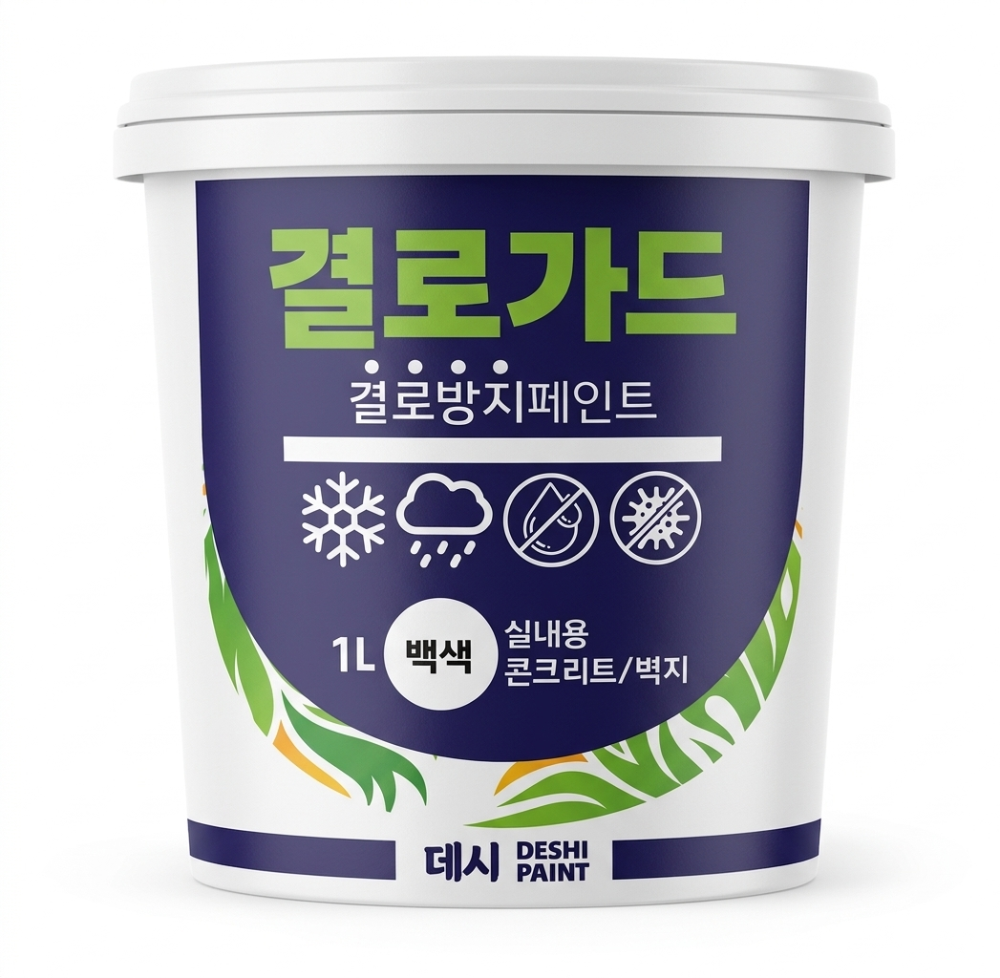
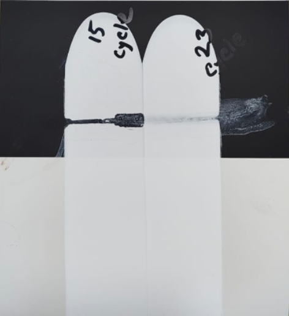
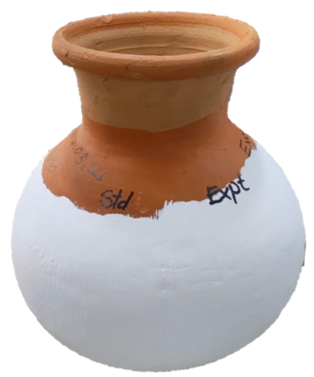
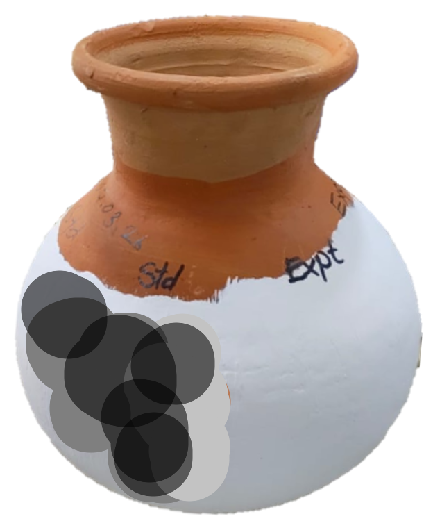
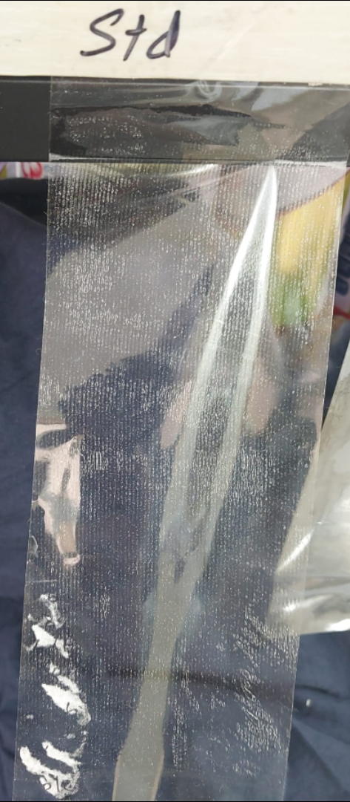
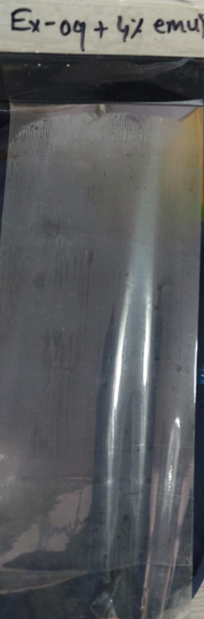
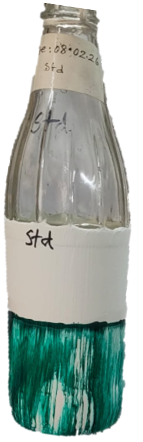
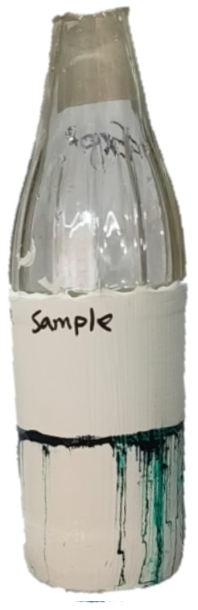

이유 1
최종 결과: 기존 15회, 결로가드 20+회

프라이머 미사용 시 내구성 비교
이유 2
직접 만져보면 차이를 느낄 수 있습니다 — 결로가드는 훨씬 부드럽고, 색감도 더 선명하고 풍부합니다.
이유 3


참고 이미지 — 실제 사진 준비 중자체 곰팡이 유발 실험: 동일 시점에 규조토에만 곰팡이 발생, 결로가드는 이상 없음
결과 사진은 추후 업데이트 예정
이유 4


테이프 부착 후 분말 잔여물 비교
이유 5


얼음물을 넣은 후 표면에 형성된 결로로 인한 잉크 확산 정도 비교